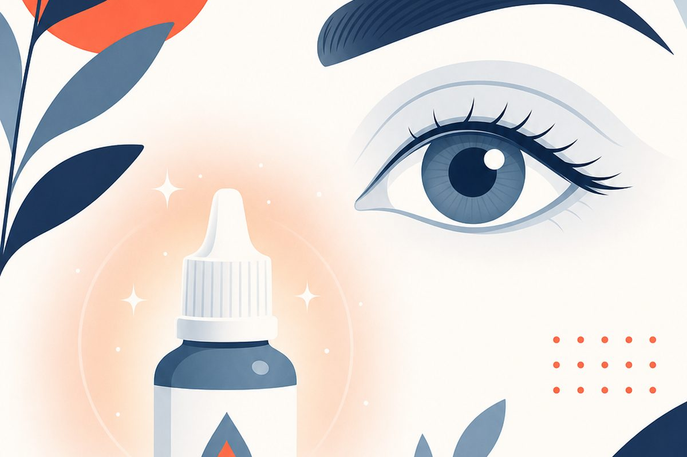

Key Takeaways
- Check for pain, light sensitivity, vision change and contact-lens use before treating a red eye as routine pink eye.[2][3]
- Viral, bacterial and allergic conjunctivitis overlap in appearance; one symptom does not prove the cause.[2][7]
- Viral symptoms often last 7 to 14 days, but recovery and contagiousness are different clocks.[1][3]
- Antibiotics do not treat viral or allergic conjunctivitis and are not an automatic work-clearance requirement.[1][2][9]
- Remove contact lenses and seek prompt eye-care advice; a video visit cannot establish that every cornea is unaffected.[2][3][5]
- Work return and lens restart need separate decisions, not one universal 24-hour countdown.[2][3][9]
Do I need eye drops, time off work or an eye exam?
Those are three different questions. The cause helps determine whether drops will help, the illness and setting shape a work decision, and warning signs or contact-lens use can make direct eye assessment the priority. Start with safety rather than choosing a bottle or a return date.[1][2][3]

Pink eye symptoms: viral, bacterial or allergies?
Pink eye, or conjunctivitis, means inflammation of the thin tissue covering the white of the eye and lining the eyelids. It describes a finding, not one particular germ. Viruses, bacteria and allergies can all cause redness, tearing or discharge, and contact lenses or irritants can produce a similar complaint. Not every red eye is conjunctivitis.[2][5]
Viral conjunctivitis
Watery discharge, a recent sore throat or cold, and contact with another person with a red eye can suggest a viral cause. These clues are not proof, and a person can have symptoms in one eye before the other becomes involved. Most acute infectious conjunctivitis in adults is viral, but an individual still needs assessment when the presentation is unusual or severe.[2][5][7]
Bacterial conjunctivitis
Thicker discharge and eyelids stuck together on waking can increase the likelihood of bacteria. Discharge color alone does not make the diagnosis or establish that a particular antibiotic is needed. Pain, reduced vision or marked swelling should not be dismissed as routine “bacterial pink eye.”[2][5][7]
Allergic conjunctivitis
Prominent itching with other allergy symptoms can suggest allergic conjunctivitis. Allergic pink eye is not contagious. That distinction matters for work and household precautions, but a history of allergies does not make a painful or vision-changing red eye safe to ignore.[2][5][9]
| Possible cause | Clues that may help | Important limit |
|---|---|---|
| Viral | Watery eye, respiratory symptoms or contact with someone with a red eye | Contagious; antibiotics do not treat the virus.[1][2][7] |
| Bacterial | Discharge and eyelids matted together | Symptoms overlap with viral disease; a clue is not a culture result.[2][5][7] |
| Allergic | Itching and a compatible allergy history | Not contagious, but symptoms still need the right diagnosis.[2][5][9] |
How long does pink eye last?
The cause matters more than the label. CDC says most mild viral pink eye clears in 7 to 14 days, although some cases take 2 to 3 weeks or longer. Mild bacterial disease can improve without antibiotics in 2 to 5 days but may take 2 weeks to disappear completely. These are general courses, not deadlines for every adult.[3]
Symptoms persisting beyond an expected course, getting worse, or returning after improvement deserve reassessment. Redness that is repeatedly treated without confirming the cause can reflect a different eye problem. The American Academy of Ophthalmology (AAO) specifically notes that chronic or difficult-to-treat conjunctivitis can have causes that need a more detailed evaluation.[1][3]
Do not use symptom duration as a countdown to wearing lenses or ending precautions. Feeling more comfortable, having fewer visible symptoms and being safe for a particular activity are related but different questions. An eye examination or a workplace-specific decision can still be needed.[1][2][3]
How long is pink eye contagious?
Viral and bacterial conjunctivitis can spread through contaminated hands, tears, eye discharge and shared objects. Allergic conjunctivitis does not spread from person to person. Preventing hand-to-eye transfer remains useful even when you are not sure which infectious cause is responsible.[1][2][4][5]
For epidemic adenoviral conjunctivitis, AAO describes the period of contagion as usually 10 to 14 days from onset. That is not a universal duration for every form of pink eye, and it is not the same measurement as the CDC's typical symptom-recovery range. Some people remain symptomatic for longer.[1][3]
There is no single drop-to-clearance rule that safely covers every diagnosis. An antibiotic cannot end viral contagiousness. Even bacterial advice differs by context: AAO's public information describes spread until about 48 hours after antibiotic treatment begins, while CDC's work advice emphasizes clinician approval and implementation of any indicated therapy rather than a fixed number of hours.[2][9]
Keep using careful hand hygiene and avoid sharing towels, makeup or eye drops while ill. Do not treat a less red eye or one day of medicine as proof that all transmission risk has ended. Ask for individualized advice when you work in close contact with others or when the diagnosis remains uncertain.[1][2][4]
Can you go to work with pink eye?
The decision depends on the cause, how ill you feel, your ability to avoid close contact and the requirements of the setting. CDC advises staying home with viral or bacterial conjunctivitis when there are systemic signs of illness, especially when close contact cannot be avoided. It says return to work can occur with clinician approval after any indicated treatment has been implemented.[2]
This is not a rule that every adult needs antibiotics before returning. Allergic conjunctivitis is not contagious, and antibiotics do not treat a viral infection. A workplace request for treatment is a separate practical issue from whether an antibiotic has a clinical indication.[1][2][9]
Why “24 hours after drops” is not universal clearance
Some policies and older clinical summaries use a 24-hour treatment threshold. That shortcut does not identify the cause, make a viral infection respond to antibiotics or show that your particular work is safe. Use the current clinician's advice and the rules for your actual setting rather than copying another person's return date.[2][9]
Ask what your employer requires and tell the clinician if your work involves unavoidable close contact with other people. A general educational guide cannot issue clearance for a healthcare setting, food-service role or another workplace with its own requirements. Do not buy or borrow drops simply to satisfy an assumed rule.[1][2]
Can I wear contacts with pink eye?
Stop wearing contact lenses when your eye becomes red or irritated. Switch to glasses and contact an eye-care professional for advice. CDC specifically warns that contact-lens wearers with bacterial conjunctivitis have a higher risk of bacterial keratitis, an infection of the cornea, and recommends prompt ophthalmologist evaluation.[2][3]
A routine video assessment cannot reliably establish that the cornea is unaffected. Pain, sensitivity to light, reduced or blurred vision, or a worsening red eye should lead to urgent direct assessment, not a request for a routine refill. Lenses should remain out while the cause and safe treatment are being established.[2][3][5]
When can I wear contacts again?
Follow your eye doctor's instructions. CDC advises waiting until symptoms are gone or your eye doctor says it is safe to restart. A day of antibiotics or a less noticeable red eye is not a personal clearance test, especially if a corneal infection was a concern.[2][3][4]
Discard disposable lenses and disposable cases used during the infection. Clean reusable items as directed by your eye doctor, and follow the specific instructions for your lens system. Do not put a lens back in just to see whether it still hurts, and do not share lenses or cases.[3][4]
Decision framework: home care, clinical review or an urgent eye exam?
Start with safety, not the color of the discharge. Several conditions can look like conjunctivitis, and an activity decision should not delay evaluation of a potentially serious red eye. A clinician may need to check vision and examine the cornea directly before choosing treatment.[2][3][5]
| Situation | Appropriate next step | What not to assume |
|---|---|---|
| Mild irritation without a warning sign | Symptom care may be reasonable, with reassessment if the course changes. | Every red eye needs antibiotics.[1][3] |
| Suspected infectious pink eye and a work question | Review the diagnosis, illness and ability to avoid close contact; check the workplace's rules. | A fixed 24-hour medicine rule establishes safety.[2][9] |
| Contact-lens wearer with a red eye | Remove lenses and seek prompt eye-care assessment. | A routine video visit can exclude a corneal infection.[2][3][5] |
| Pain, light sensitivity, vision change or intense redness | Urgent direct eye assessment; use emergency care if severe or immediate eye care is unavailable. | Wait until the drops have had several days to work.[3][9] |
Can you tell bacterial from viral pink eye without a test?
Often, clinicians use the history and examination rather than testing every uncomplicated case. They ask about onset, exposure, itching, discharge, other illness, contact lenses and any change in vision. Those questions help determine both the likely cause and whether an examination or testing is necessary.[2][5][7]
A 2022 diagnostic systematic review found that no single symptom or sign distinguished viral from bacterial conjunctivitis with high certainty. That is why “green discharge means antibiotics” and “both eyes means allergies” are not reliable stand-alone rules. Patterns can inform judgment without proving a diagnosis.[7]
An online photograph also cannot answer every question that matters. When pain, light sensitivity or reduced vision is present, the next step may be an eye examination rather than more messages or another photo. Contact-lens wear and persistent symptoms also change the threshold for direct evaluation.[2][3][5]
Pink eye treatment: how do you get rid of it?
For uncomplicated symptoms, cold compresses and artificial tears can relieve discomfort and dryness. Wash hands before and after touching the area or applying drops. Keep the bottle tip away from the eye and do not share it. Comfort measures do not treat every cause or replace an examination when warning signs are present.[3][4][9]
Viral conjunctivitis generally receives supportive care, not antibacterial drops. More serious infections, including some caused by herpes viruses, need a different clinical plan. Do not assume every viral red eye is something to wait out, especially when pain, light sensitivity or a vision change occurs.[1][2][3]
Mild bacterial conjunctivitis may resolve on its own. A clinician may choose a topical antibiotic when the likely cause, discharge, immune status or other features support treatment. The choice is not simply “stronger is better,” and contact-lens-associated disease should not be managed as routine uncomplicated pink eye without an appropriate eye-care assessment.[1][2][3]
For allergic conjunctivitis, reducing exposure to the trigger and using appropriate allergy treatment can help. A pharmacist or clinician can help select a suitable eye product. If the diagnosis is uncertain, repeatedly switching drops can delay the assessment of another cause.[3][5][9]
Do antibiotics help pink eye, and can it go away on its own?
Both statements can be true: many uncomplicated cases improve without antibiotics, and antibiotics can improve outcomes in bacterial disease. The important distinction is whether the evidence applies to the type of red eye in front of you. Antibiotics do not help viral or allergic conjunctivitis.[1][2][3][6]
In the 2023 Cochrane review, 55.5% of placebo-group participants had clinical resolution by days 4 to 9, compared with 68.2% of participants treated with an antibiotic in the relevant intention-to-treat analysis. Those are bacterial-conjunctivitis trial results, not a promise about all red eyes or a measure of when someone stops being contagious.[6]
The review included heterogeneous trials with different drugs, schedules and eligibility criteria. Its result does not establish that every person needs treatment or that one product is best. AAO advises avoiding indiscriminate antibiotic use and states that no topical antibiotic has demonstrated superiority over the others in this context.[1][6]
For the separate evidence discussion, see our existing adult antibiotics-versus-watchful-waiting article. This guide concentrates on immediate safety, work and contact-lens decisions rather than creating another version of that comparison.
Pink eye eye drops: which type answers which problem?
Eye drops are not interchangeable. A lubricant, an allergy drop, an antibiotic and a steroid-containing product have different purposes. The bottle that helped someone else may not fit your diagnosis. Read the label and use only the product and schedule recommended for you.[1][3][9]
| Type | Main role | Important boundary |
|---|---|---|
| Artificial tears | Relieve dryness or irritation | Comfort does not establish that an infection has cleared.[3][9] |
| Allergy eye drops | Treat an appropriate allergic presentation | They do not treat an infectious cause.[3][5][9] |
| Antibiotic drops or ointment | Treat selected bacterial disease | They do not treat viruses or replace evaluation of contact-lens-associated red eye.[1][2][3] |
| Steroid-containing drops | Selected conditions under an eye-care clinician's supervision | Do not self-start leftover steroids or antibiotic-steroid combinations.[1][8] |
A 2025 review examined steroid-containing regimens in selected infectious-conjunctivitis studies. That research does not mean that steroid drops are a safe default for an undiagnosed red eye. Specific diagnosis, treatment combinations and follow-up matter, and AAO continues to caution against indiscriminate corticosteroid use.[1][8]
Do not use someone else's medicine or an old prescription to obtain work clearance. Seek reassessment if symptoms worsen, and contact the clinician if bacterial pink eye is not improving after 24 hours of antibiotic use, as CDC advises. That reassessment threshold is not a guarantee of cure or a contagiousness deadline.[3]
How can you prevent spreading pink eye at home?
Wash hands with soap and water for at least 20 seconds, especially before and after cleaning the eye or using medicine. When soap and water are unavailable, CDC advises an alcohol-based hand sanitizer containing at least 60% alcohol. Avoid rubbing the eyes and do not share eye drops, towels, pillows or cosmetics.[4]
Use a clean wet washcloth or fresh cotton ball to remove discharge from around the eye. Discard used cotton balls and wash cloths with detergent and hot water. Wash hands afterward. Keep personal items separate rather than assuming that antibiotic treatment immediately removes the need for hygiene.[1][4]
Follow CDC's instructions for cleaning reusable items and discarding disposable contact lenses and cases used during infection. Stop eye makeup during the illness and replace contaminated products as advised. Avoid swimming pools while you have pink eye; do not treat swimming goggles as protection against spreading infection.[3][4][9]
Red flags: when does pink eye need urgent direct care?
Eye pain, light sensitivity, blurred vision that does not improve after discharge is wiped away, or intense redness should prompt medical assessment. Worsening symptoms and a weakened immune system also change the plan. Severe symptoms or sudden vision problems should not wait for a routine telehealth appointment.[3][9]
Contact-lens wear deserves special attention because a corneal infection can initially be described as “pink eye.” Remove lenses and seek prompt eye-care review. A prescription without an appropriate examination is not a substitute when keratitis is possible.[2][3][5]
Copious discharge, marked swelling, repeated episodes or persistent disease may require testing and a different diagnosis. Some infections require treatment beyond ordinary eye drops. This guide does not provide a self-treatment pathway for suspected gonococcal disease, herpes eye disease or chronic conjunctivitis.[1][2][5]
Two appropriate next steps: assessment or direct eye care?
If symptoms are mild and no warning sign is present, discuss the history, likely cause and symptom-care plan with a clinician when needed. Ask separately about work requirements and contact-lens restart. Telehealth may help review symptoms and decide the next step, but it cannot replace every part of an eye examination.[2][3][5]
If there is pain, light sensitivity, vision change, contact-lens-associated redness or another concerning feature, prioritize direct eye-care assessment. Use urgent or emergency care when symptoms are severe or appropriate immediate eye care is not available. Do not wait for an online prescription or assume that finishing a bottle is the correct endpoint.[2][3][9]
This is an adult short-term care and triage guide, not a long-term specialist treatment plan. For a child's symptoms, use the separate pink eye in children guide and age-appropriate clinical advice. Work clearance and safe contact-lens use remain individual decisions.
Frequently Asked Questions
CDC says mild viral pink eye usually clears in 7 to 14 days, sometimes 2 to 3 weeks or longer. Mild bacterial disease may improve in 2 to 5 days without treatment but can take 2 weeks to clear completely. These are general courses, not personal deadlines.[3]
CDC advises staying home with infectious conjunctivitis when systemic illness is present, especially if close contact cannot be avoided. Return depends on clinician approval, indicated treatment and the setting. A generic 24-hour drops rule is not universal clearance.[2]
References
- Cheung AY, Choi DS, Ahmad S et al. Conjunctivitis Preferred Practice Pattern. Ophthalmology. 2024;131(4):P134-P204. https://pubmed.ncbi.nlm.nih.gov/38349304/ AAO guideline and recommendations
- Centers for Disease Control and Prevention. Clinical Overview of Pink Eye (Conjunctivitis). Page reviewed April 15, 2024; accessed November 16, 2026. https://www.cdc.gov/conjunctivitis/hcp/clinical-overview/index.html
- Centers for Disease Control and Prevention. How to Treat Pink Eye. Page reviewed April 15, 2024; accessed November 16, 2026. https://www.cdc.gov/conjunctivitis/treatment/index.html
- Centers for Disease Control and Prevention. How to Prevent Pink Eye. Page reviewed April 15, 2024; accessed November 16, 2026. https://www.cdc.gov/conjunctivitis/prevention/index.html
- Azari AA, Barney NP. Conjunctivitis: a systematic review of diagnosis and treatment. JAMA. 2013;310(16):1721-9. https://pubmed.ncbi.nlm.nih.gov/24150468/
- Chen YY, Liu SH, Nurmatov U et al. Antibiotics versus placebo for acute bacterial conjunctivitis. Cochrane Database Syst Rev. 2023;3(3):CD001211. https://pubmed.ncbi.nlm.nih.gov/36912752/
- Johnson D, Liu D, Simel D. Does This Patient With Acute Infectious Conjunctivitis Have a Bacterial Infection?: The Rational Clinical Examination Systematic Review. JAMA. 2022;327(22):2231-2237. https://pubmed.ncbi.nlm.nih.gov/35699701/
- Putri LR, Edwar L. Corticosteroid as Treatment in Infective Conjunctivitis: A Systematic Literature Review and Meta-Analysis. J Ocul Pharmacol Ther. 2025;41(4):187-198. https://pubmed.ncbi.nlm.nih.gov/40059644/ EBSCOhost full-text record
- Mukamal R. Pink Eye Myths and Facts. American Academy of Ophthalmology. Reviewed by Herz NL. September 19, 2023; accessed November 16, 2026. https://www.aao.org/eye-health/diseases/pink-eye-myths-facts-conjunctivitis